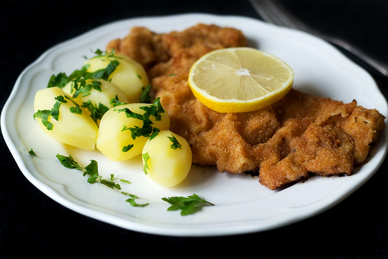
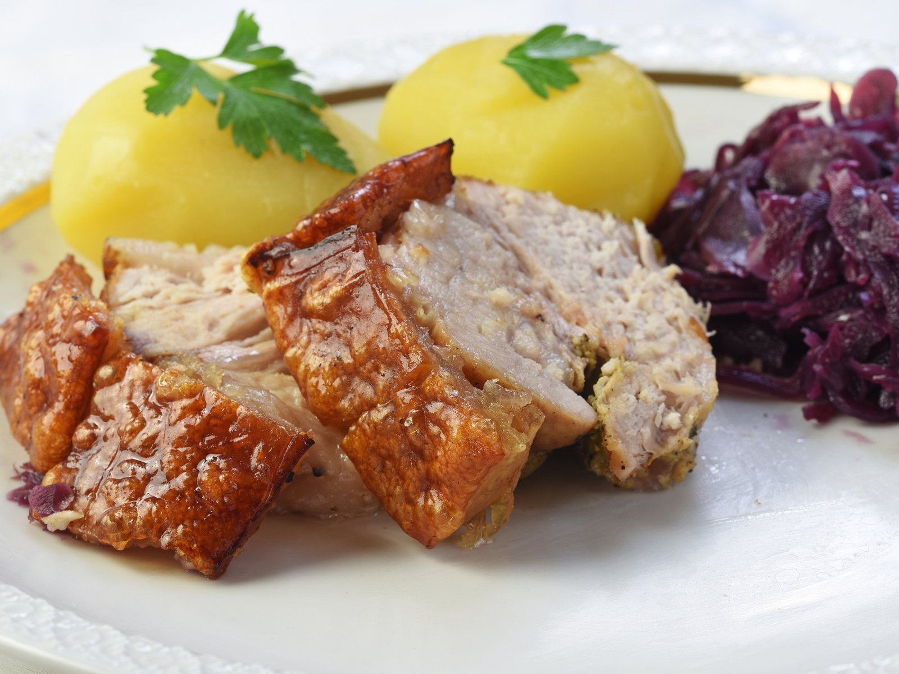
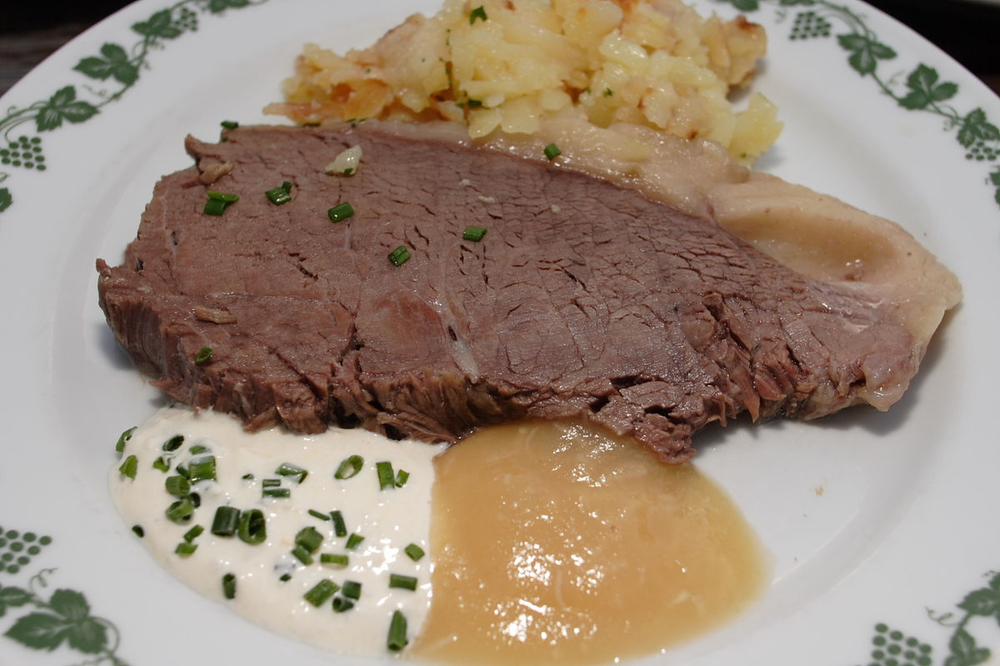
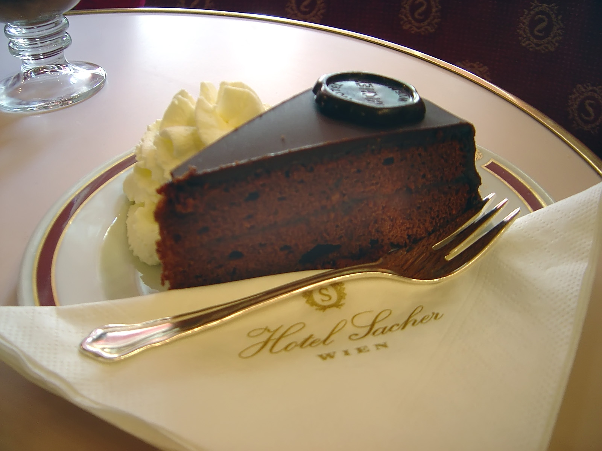
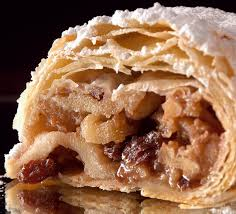

Weiner Schnitzel
Conocido como escalope vienés, es uno de los platos más famosos de la cocina Austriaca. El schnitzel está preparado tradicionalmente con una rebanada fina de carne de ternera, que se ablanda previamente golpeando la carne con un mazo. Tras esta operación se sumerge en harina de trigo, huevo batido y pan rallado antes de ser frito en mantequilla clarificada. El pan rallado se sazona a veces con pimienta negra recién molida. Tradicionalmente se servía con ensalada de patatas y rodajas de limón o con ensalada de lechuga y tomate aderezada con una vinagreta, pero en la actualidad también se sirve con arroz y patatas fritas o asadas.
Schweinebraten
Es un plato originalmente alemán, con distintas variantes, en este caso el cerdo asado, también conocido como "Bratl", es un plato tradicional austriaco de los domingos y festivos , según el registro de comidas tradicionales, es por eso por lo que su preparación de la carne primero vienen dado por el corte: lomo de cerdo , paletilla de cerdo , carne de cerdo Schlegel, el cuello de carne de cerdo o de cerdo del vientre utilizado. El cerdo asado típico austriaco se sazona con sal, pimienta, ajo y alcaravea y se fríe hasta que tenga una corteza crujiente y se sirve con ensalada de col o chucrut y albóndigas de pan o de patata.
Tafelspitz
El nombre de Tafelspitz es el nombre del corte de carne dado a la ternera que se emplea en la elaboración del plato. La carne del Tafelspitz se cuece con sopa de verduras o cualquier otro caldo similar, cuando llega a la textura apropiada se corta en rebanadas y se presenta en un plato acompañado de algunas compotas especiales al estilo vienés como son el Apfelkren o el Semmelkren y algo de caldo. Como acompañantes se añade caldo y salsas vienesas, puré de patatas, judías o incluso espinacas. También es frecuente ver una salsa de Schnittlauchsauce que es una especie de mahonesa con cebollino picado.
Sachertorte
Traducida al español como Tarta Sacher, es un pastel de chocolate típico de Austria. Esta tarta consiste en dos planchas gruesas de bizcocho de chocolate y mantequilla separadas por una fina capa de mermelada de albaricoque y recubiertas con un glaseado de chocolate negro por encima y por los lados. Tradicionalmente se acoñada de nata montada. El origen de esta tarta fue en 1832, inventada por Franz Sacher, para deleitar a un grupo selecto de invitados del príncipe Klemens Wenzel von Metternich. Fue aprendiz de repostero en la Confitería Demel donde comenzo a realizar estas tartas con su padre, y no fue hasta el 1876 cuando fundó el hotel Sacher y comenzó a venderla.
Apfelstrudel
Las raíces de este pastel se sitúan en el árabe y armenio Baklava. La cocina vienesa desarrolló este plato y lo refinó hasta llegar a ser lo que conocemos hoy en día. El Apfelstrudel consiste en un rollo muy fino de masa, a veces también de hojaldre, relleno de compota de manzana, azúcar, canela, pasas y pan rallado que una vez preparado se cocina en el horno.El ron se emplea algunas veces como saborizante. Otros ingredientes incluyen piñones, nueces, o almendras ralladas. El Apfelstrudel se suele servir fresco y todavía caliente, generalmente con algo de azúcar glas espolvoreada sobre él. Usualmente se acompaña con una salsa caliente dulce de crema aromatizada con vainilla.